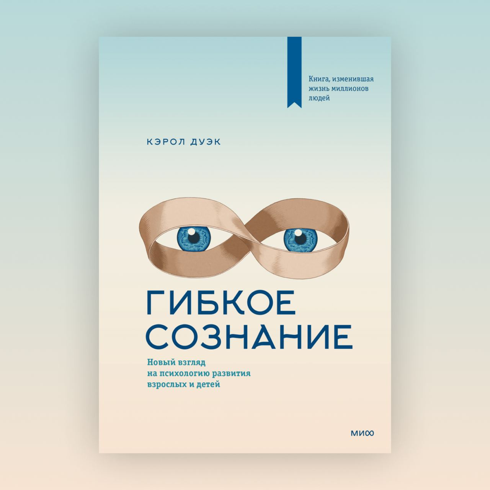

Эта книга очень сильно на меня повлияла. В книге автор (всемирно известный психолог Кэрол Дуэк) рассказывает об своем исследовании, в котором мышление людей делится на два типа: с установкой на данность и с установкой на рост.
Люди с установкой на данность (таких большинство) верят, что врожденные ум и талант неизменны. Они тратят время на то, чтобы доказать всем, что они умны и талантливы, вместо того, чтобы развивать свои таланты.
Люди с установкой на рост верят, что все качества можно развить, планомерно работая над собой, а изначальный уровень интеллекта и таланта — это всего лишь стартовая точка. Такой подход формирует любовь к постоянному обучению и устойчивость к трудностям и неудачам. Вряд ли найдется хоть один выдающийся человек, который бы не обладал этими качествами.
Эта замечательная книга научила меня использовать трудности и кризисы как повод для роста, а также усилила веру в то, что можно научиться чему угодно.
Она сильно повлияла и на культуру Serenity, в которой мы стремимся развивать установку на рост, а не поддерживать установку на данность.
Сергей Прусс